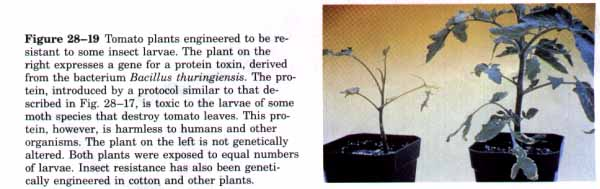
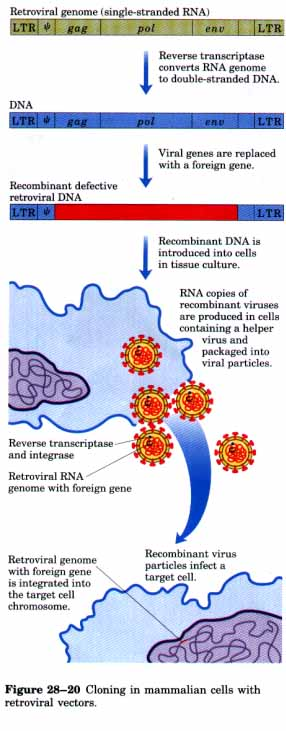
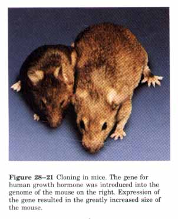
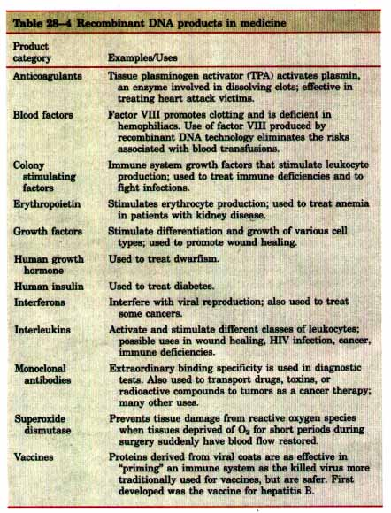

The transformation of animal cells with foreign genetic material offers an important mechanism for advancing knowledge about the structure and function of animal genomes, as well as for the generation of animals with new traits. This potential has spawned intensive research efforts that have produced increasingly sophisticated means for cloning in animals.
| Most work of this kind requires a source
of individual cells. Intact tissues are often difficult
to keep alive and manipulate. Fortunately, many types of
animal cells can be isolated and grown in a medium in the
laboratory if their growth requirements are carefully
met. Many cells grown in this kind of tissue culture
maintain the differentiated properties they had in the
whole tissue for weeks or even months. There are several common methods for introducing DNA into an animal cell. Because no suitable plasmidlike vector is available, transformation requires the integration of the DNA into a host-cell chromosome. In spontaneous uptake, a calcium phosphate-DNA precipitate is taken up by the cells, perhaps by endocytosis. Generally only about one in 102 to 104 cells is transformed in this procedure. Another direct method that is sometimes more efiicient is to make the cells transiently permeable to DNA by exposing them to a brief high-voltage pulse in a technique called electroporation. |
Figure 28-18 A tobacco plant in which the gene for firefly luciferase is expressed. Light was produced after the plant was watered with a solution containing luciferin, the substrate for this lightproducing enzyme (see Box 13-3, Fig. 2). Don't expect glow-in-the-dark ornamental plants at your local nursery anytime soon; the light is actually quite weak and this photograph represents a 24 hour exposure. The real point-that this technology allows the introduction of new traits into plants-is nevertheless elegantly made. |

Microinjection entails direct injection of DNA into the nucleus of a cell with the aid of a very fine needle. For skilled practitioners this method has a high success rate, but because cells must be injected one by one, the total number that can be treated is small.
| A number of eukaryotic viruses sometimes
integrate their DNA into a chromosome in the host cell.
Some of these, in particular certain retroviruses (p.
882), have been modified to act as viral vectors to
introduce foreign DNA into mammalian cells. The viruses
have their own mechanisms for moving nucleic acid into
cells, and transformation by this route can be very
efficient. A simplified map of a typical retroviral
genome is shown in Figure 28-20. When the virus enters a
cell, its RNA genome is converted to DNA by reverse
transcriptase and is then integrated into the host genome
in a reaction mediated by the viral integrase. The long
terminal repeat (LTR) sequences are required for
integration of retroviral DNA in the host chromosome (see
Fig. 25-30), and the ~ sequence is required to package
the viral RNA in viral particles. The gag, pol, and env genes of the retroviral genome can be replaced with foreign DNA. This recombinant DNA lacks the genes required for retroviral replication and assembly of viral particles. To assemble viruses with the recombinant genetic information, the DNA must be introduced into cells in tissue culture that are infected with a helper virus, which has the genes to produce virus particles but lacks the ψ sequence required for packaging. Within the cells, the recombinant DNA is transcribed, and the RNA is packaged. The resulting viral particles therefore contain only the recombinant viral RNA and can act as vectors to introduce this RNA into target cells. Viral reverse transcriptase and integrase enzymes (produced by the helper virus) are also packaged in the viral particle and are introduced into the target cells. Once the engineered viral genome is inside a cell, these enzymes create a DNA copy of the viral RNA genome and integrate it into a host chromosome. The integrated recombinant DNA effectively becomes a permanent part of the chromosome because the virus lacks the genes necessary to produce RNA copies of its genome and package them into new virus particles. In most cases the use of recombinant retroviruses is the best method for introducing DNA into large numbers of mammalian cells. |
 |
Transformation of animal cells by any of the above techniques is problematic for several reasons. The foreign DNA is generally inserted at chromosomal locations that vary randomly from cell to cell. When the foreign DNA contains a sequence homologous to a sequence on a host chromosome, the introduced DNA is sometimes targeted to that position and integrated by homologous recombination. The nonhomologous integrants still outnumber the targeted ones, however, by factors of 102 to 105. Some of these integration events are deleterious to the cell because they occur in and disrupt essential genes. Different integration sites can also greatly affect the expression of an integrated gene, because integrated genes are not transcribed equally well everywhere in the genome. Another targeting problem involves the class of cell to be transformed. If germ-line cells are altered, the alteration will be passed on to successive generations of the organism. If somatic cells alone are affected, the alteration will affect only the treated animal.
Despite these problems, this technology has been used extensively to study chromosome structure, as well as the function, regulation, and expression of genes in eukaryotic cells. The successful introduction of recombinant DNA into an animal can again be illustrated by an experiment that altered an easily observable physical trait. The objective in this case was to alter germ-line cells in mice to create an inheritable change.

Microinjection of DNA into the nuclei of fertilized mouse eggs can produce efficient transformation (chromosomal integration). When the injected eggs are introduced into a female mouse and allowed to develop, the new gene is often expressed in some of the newborn mice. Those in which the germ line has been altered can be identified by testing their offspring. By careful breeding, a mouse line can be established in which all the mice are homozygous for the new gene or genes. Animals permanently altered in this way are called transgenic. This technology was used to introduce into mice the human growth hormone gene under the control of an inducible promoter. When fed a diet including the inducer, some of the mice that developed from injected embryos grew to an unusually large size (Fig. 28-21).If mouse cells can be altered stably by recombinant DNA technology, so then can human cells. Introduction of DNA into human cells offers, for the first time, the potential for treating and even curing human genetic diseases that have been refractory to traditional therapies (Box 28-2, p. 1008). A major technological limitation in these ef forts is our overall knowledge of the cellular metabolism that underlies many genetic diseases. As understanding improves, the ability to manipulate cellular metabolism by genetic engineering will improve. A contribution to this understanding may be made by the international project to sequence and map the entire human genome that will proceed through the 1990s. The technology needed to repair genetic defects brings with it the potential for altering human traits. Clearly, we are at a scientific crossroads that has far-reaching implications for the future of humankind.
BOX 28-2A Cure for Genetic DiseasesHuman gene therapy is a reality in the 1990s. The experiments are going forward with an unprecedented level of oversight and regulation by governments and scientific review committees. Because of the ethical issues inherent in this work, the objectives laid out by these review committees are narrowly defined; the experiments must meet strict ethical and practical criteria and are intended only to treat severe genetic disorders. First, the research is limited to somatic cells so that a treated individual cannot pass genetic alterations to offspring. Genetic engineering in human germ-line cells conjures up misguided past attempts to "improve" human beings, and evokes a wide range of objections on ethical grounds. Second, the risk to the patient must be outweighed by the potential therapeutic benefit. The inherent risk is exemplified by the possibility of random integration of DNA into a human chromosome leading to inactivation of a gene that regulates cell proliferation, effectively producing a cancer cell. For this reason the targets of the first gene therapy trials are among the most serious genetic diseases. Third, the target diseases must be limited to those that involve a known defect in a single gene, and the normal gene must be cloned and available. Fourth, the disease must involve cells that can be isolated from a patient, altered in tissue culture, and then reimplanted in the patient. This effectively limits the therapy to diseases involving cells of the skin or bone marrow, although some success has been achieved with other tissues such as liver. Fifth, the planned procedures must meet strict safety standards in animal trials before attempts are made with human beings. The key experimental hurdle is the efficient introduction of DNA into a sufficient number of human cells in a form in which it can be expressed. Because very large numbers of cells must be transformed to have some hope of beneficial effects, research has focused on retroviral vectors (see Fig. 28-20). Expression of introduced genes has been highly variable in animal trials. In many cases, the introduced genes were expressed well in culture, then not at all when the cells were transferred to an animal. New strategies for gene expression are being developed. Targets of human gene therapy include diseases that result from a functional lack of a single enzyme produced by a single gene (see Table 6-6). These include Lesch-Nyhan syndrome (p. 729), which occurs when hypoxanthine-guanine phosphoribosyltransferase is absent and results in mental retardation and severe behavioral problems. 'Iwo forms of severe immune deficiency,which result from a lack of adenosine deaminase (p. 729) or purine nucleoside phosphorylase, are also promising candidates. Work on correcting adenosine deaminase deficiency is already well advanced. Although these two diseases affect only a small number of people, they are very serious (people with severe immune deficiency soon die unless they are kept in a sterile environment), and in the case of adenosine deaminase deficiency the introduction of the missing gene activity into bone marrow cells does appear to have a beneficial ef fect. Another effort is focused on new approaches to treating cancer. Immune-system cells known to be associated with tumors, called tumor-infiltrating lymphocytes, have been modified to produce a protein with demonstrated antitumor activity, called tumor necrosis factor (TNF). When reintroduced into a cancer patient the modified cells migrate to the tumor and the TNF they produce facilitates tumor shrinkage. Another approach is to remove and modify tumor cells themselves to produce TNF. When reintroduced into patients the modified cells stimulate the immune system to attack the cancer cells. In animal trials this approach has led to reduction or elimination of tumors and has left the animal immune to the cancer. Additional genetic disorders that involve treatment of bone marrow cells include the genetic disorders of hemoglobin-sickle-cell anemia (p. 187) and thalassemia. These represent more formidable problems because hemoglobin is the product of more than one gene, and its expression must be limited to a small subfraction of bone marrow cells called the stem cells, which are the progenitors not only of erythrocytes but of granulocytes, macrophages, and platelets. Potential treatment of some more common genetic disorders must await development of methods to remove and replace cells from other tissues. For example, gene therapy for familial hypercholesterolemia, caused by a defect in cholesterol metabolism (p. 679) that can lead to heart attacks at an early age, requires the introduction and expression of a functional LDL receptor in hepatocytes. The prospect of curing such diseases holds great potential for alleviating human suffering. As this technology advances, however, so does the potential to alter other physical traits. For example, the introduction and expression of a single gene from the mouse Y chromosome (the Sry gene) into the genome of female (XX) mouse embryos causes them to develop into male mice. The need for continued societal involvement in debating the issues generated by this technology is obvious. |
The products of recombinant DNA technology range from proteins to engineered organisms. Large amounts of commercially useful proteins can be produced by these techniques. Microorganisms can be designed for special tasks; plants or animals can be engineered with traits that are useful in agriculture. Some products of this technology have been approved for use and many more are in development. During the 1980s genetic engineering was transformed from a promising technology to a multibillion dollar industry. The iirst commercial product of recombinant DNA technology was human insulin, produced by Eli Lilly and Company and approved for human use by the U.S. Food and Drug Administration in 1982. Hundreds of companies have become involved in product development worldwide. Much of this growth has come in human pharmaceuticals, and some of the major classes of new products are listed in Table 28-4.

Erythropoietin is typical of the newer products. Erythropoietin is a protein hormone (Mr 51,000) that stimulates erythrocyte production. People with kidney disease often have a deficiency of this protein, a condition that leads to anemia. Erythropoietin produced by recombinant DNA technology can be used to treat these patients, reducing the need for repeated blood transfusions and their accompanying risks. Approved by the U.S. Food and Drug Administration in 1989, erythropoietin promises to be the most profitable pharmaceutical agent developed by recombinant DNA methods in the 1990s.
Other industrial applications of this technology are likely to continue developing. Enzymes produced by recombinant DNA technology are already used to produce detergents, sugars, and cheese. Engineered proteins are being used as food additives to supplement nutrition, flavor, and fragrance. Microorganisms are being engineered to extract oil and minerals from ground deposits, to digest oil spills, and to detoxify hazardous waste dumps and sewage. Engineered plants with improved resistance to drought, frost, pests, and disease are increasing crop yields and reducing the need for agricultural chemicals. The potential of this technology to benefit humankind and the world environment seems readily apparent yet sometimes hard to define, with the future rendered opaque by our still limited understanding of cellular metabolism and ecology.
Every major new technology comes with associated risks and a potential for unanticipated societal or environmental impact. As with the automobile and nuclear energy, economic, environmental, and ethical considerations will necessarily play an increasingly important role in determining how recombinant DNA technology is applied. One harbinger of this new relationship between biochemistry and society has been the debate in the United States and elsewhere over bovine growth hormone, which is used to increase milk production. In addition to some potential for added stress on the animals and concerns among consumers about the safety of the milk for human use, increasing milk production when a surplus already exists may have the effect of lowering prices and imposing economic hardship on dairy farmers.
Other issues raised by this technology promise to have a much broader impact. A particularly clear example can be seen in an array of new diagnostic procedures based on recombinant DNA technology. These are greatly increasing our ability to detect genetic diseases in an individual, often many years before the onset of symptoms or even before birth. The same technology that makes it possible to identify a criminal (Box 28-1) may be used to test individuals for a genetic predisposition to conditions such as Alzheimer's disease, hypercholesterolemia, asthma, and alcoholism. This information will permit better and earlier treatments, but the same information could be used to restrict individual access to health insurance (and thus health care), life insurance, and even certain jobs. The questions of who will have access to this information and how it will be used will grow in importance as more tests become widely available
These are only some of the more straightforward examples. Release of genetically engineered organisms into the environment carries with it a level of risk that is sometimes difficult to evaluate. Human gene therapy (Box 28-2), with all of its promise, doubtless will present society with ethical dilemmas not yet anticipated. Issues of this kind must in the end foster a closer and more productive collaboration between science and the society it serves, as well as higher levels of scientific literacy in the general public, as we move toward the twenty-first century.